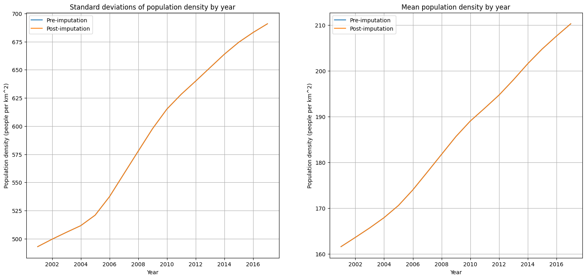
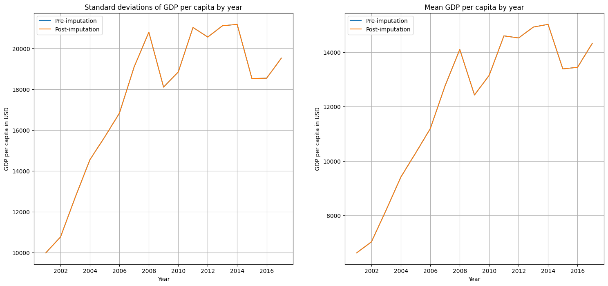
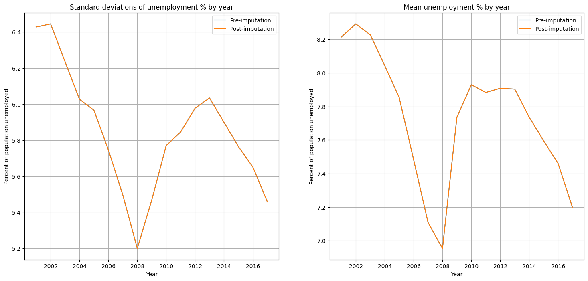
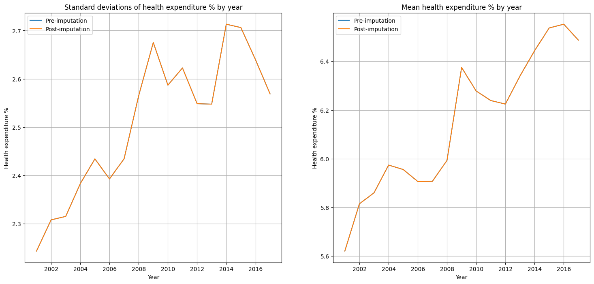
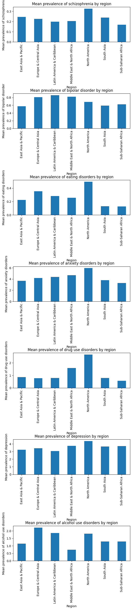

By: Olivia Reese
Introduction
Mental Health Significance
Mental health is one of the key components toward overall well-being, as it influences an individual's quality of life. Despite its significance, mental health disorders are a global challenge that are seemingly worsening throughout the years. A CNN/Kaiser Family Foundation poll recently reported that "90% of Americans feel that we are in a mental health crisis". There are a variety of factors contributing to mental health disorders, and vary from individual to individual. However, trends exist on a country level such as econimic indicators, demographics, etc, that make individuals more susceptible to mental health disorders. Gaining an understanding of these factors that influence mental health and developing effective preventive strategies are highly valued for worldwide health initiatives.
More information regarding mental health can be found at the World Health Organization (WHO) website: https://www.who.int/news-room/fact-sheets/detail/mental-health-strengthening-our-response
Purpose
The purpose of this study is to analyze mental health disorders around the world and contribute toward developing predictive models for mental health on a global scale. Various factors that potentially influence mental health disorders around the world will be analyzed, such as demographics, economic indicators, and more. This study will use statistical analysis and machine learning techniques in order to gain insight toward the patterns of mental health disorders, and attempt to predict countries' susceptibilities to mental health disorders.
This study is especially applicable to data science because it aims to address the very complex nature of mental health disorders around the world through using statistical analysis and machine learning techniques. By understanding the factors that contribute toward mental health disorders, people such as healthcare professionals and policymakers can design preventive strategies for specific populations that are susceptible to mental health disorders. From this, the burden of mental health disorders may be mitigated and overall improve the well-being of individuals around the world.
Part 1: Data Collection
This section includes the functionality for collecting all relevant data for this study. First, all Python libraries are imported here for the study.
import pandas as pd
from functools import reduce
from sklearn.linear_model import LinearRegression
import matplotlib.pyplot as plt
import statsmodels.formula.api as smf
from statsmodels.stats.outliers_influence import variance_inflation_factor
from sklearn.linear_model import Ridge
from sklearn.model_selection import train_test_split
from sklearn.metrics import mean_squared_error
from sklearn.preprocessing import StandardScalerFactors typically not studied that could potentially influence mental health throughout the world include:
Data sources:
Gathering Data
The factors (independent variables) analyzed in this study are population density, GDP per capita, unemployment, healthcare expenditure, and life expectancy. The following demonstrates how the data is gathered, which will be reading from a csv file of each dataset listed above and storing the result in a DataFrame.
Mental health data
This DataFrame will include mental health information (schizophrenia %, bipolar disorder %, eating disorders %, anxiety disorders %, drug use disorders %, depression %, and alcohol use disorders %) for each country for the years of 1990 through 2017.
mental_health_data = pd.read_csv("Datasets/Mental health Depression disorder Data.csv", low_memory=False)
mental_health_data.head()| index | Entity | Code | Year | Schizophrenia (%) | Bipolar disorder (%) | Eating disorders (%) | Anxiety disorders (%) | Drug use disorders (%) | Depression (%) | Alcohol use disorders (%) | |
|---|---|---|---|---|---|---|---|---|---|---|---|
| 0 | 0 | Afghanistan | AFG | 1990 | 0.16056 | 0.697779 | 0.101855 | 4.828830 | 1.677082 | 4.071831 | 0.672404 |
| 1 | 1 | Afghanistan | AFG | 1991 | 0.160312 | 0.697961 | 0.099313 | 4.829740 | 1.684746 | 4.079531 | 0.671768 |
| 2 | 2 | Afghanistan | AFG | 1992 | 0.160135 | 0.698107 | 0.096692 | 4.831108 | 1.694334 | 4.088358 | 0.670644 |
| 3 | 3 | Afghanistan | AFG | 1993 | 0.160037 | 0.698257 | 0.094336 | 4.830864 | 1.705320 | 4.096190 | 0.669738 |
| 4 | 4 | Afghanistan | AFG | 1994 | 0.160022 | 0.698469 | 0.092439 | 4.829423 | 1.716069 | 4.099582 | 0.669260 |
Population data
Two DataFrames are created here, one for global country statistics, and the other for population of each country from the years 1950 through 2023. These datasets will be used in conjunction in order to determine the population density for each country in this range of years.
country_data = pd.read_csv("Datasets/world_country_stats.csv")
country_data.head()| country | region | land_area | fertility_rate | median_age | |
|---|---|---|---|---|---|
| 0 | Afghanistan | Asia | 652860 | 4.4 | 17.0 |
| 1 | Albania | Europe | 27400 | 1.4 | 38.0 |
| 2 | Algeria | Africa | 2381740 | 2.8 | 28.0 |
| 3 | American Samoa | Oceania | 200 | 2.2 | 29.0 |
| 4 | Andorra | Europe | 470 | 1.1 | 43.0 |
population_data = pd.read_csv("Datasets/world_population_by_year_1950_2023.csv")
population_data.head()| country | 1950 | 1951 | 1952 | 1953 | 1954 | 1955 | 1956 | 1957 | 1958 | ... | 2014 | 2015 | 2016 | 2017 | 2018 | 2019 | 2020 | 2021 | 2022 | 2023 | |
|---|---|---|---|---|---|---|---|---|---|---|---|---|---|---|---|---|---|---|---|---|---|
| 0 | Afghanistan | 7480461 | 7571537 | 7667533 | 7764546 | 7864285 | 7971931 | 8087727 | 8210201 | 8333826 | ... | 32716210 | 33753499 | 34636207 | 35643418 | 36686784 | 37769499 | 38972230 | 40099462 | 41128771 | 42239854 |
| 1 | Albania | 1252582 | 1289168 | 1326948 | 1366744 | 1409005 | 1453730 | 1500624 | 1549571 | 1600983 | ... | 2884102 | 2882481 | 2881063 | 2879355 | 2877013 | 2873883 | 2866849 | 2854710 | 2842321 | 2832439 |
| 2 | Algeria | 9019866 | 9271734 | 9521702 | 9771686 | 10011541 | 10242288 | 10473168 | 10703251 | 10933784 | ... | 38760168 | 39543154 | 40339329 | 41136546 | 41927007 | 42705368 | 43451666 | 44177969 | 44903225 | 45606480 |
| 3 | American Samoa | 19032 | 19425 | 19561 | 19670 | 19758 | 19826 | 19902 | 19937 | 19918 | ... | 52217 | 51368 | 50448 | 49463 | 48424 | 47321 | 46189 | 45035 | 44273 | 43914 |
| 4 | Andorra | 6005 | 5827 | 5454 | 5308 | 5566 | 6116 | 6705 | 7330 | 7994 | ... | 71621 | 71746 | 72540 | 73837 | 75013 | 76343 | 77700 | 79034 | 79824 | 80088 |
5 rows × 75 columns
GDP per capita data
This DataFrame will contain the GDP per capita in USD for each country between the years 1960 and 2021.
gdp_data = pd.read_csv("Datasets/world_country_gdp_usd.csv")
gdp_data.head()| Country Name | Country Code | year | GDP_USD | GDP_per_capita_USD | |
|---|---|---|---|---|---|
| 0 | Aruba | ABW | 1960 | NaN | NaN |
| 1 | Africa Eastern and Southern | AFE | 1960 | 2.129059e+10 | 162.726326 |
| 2 | Afghanistan | AFG | 1960 | 5.377778e+08 | 59.773234 |
| 3 | Africa Western and Central | AFW | 1960 | 1.040414e+10 | 107.930722 |
| 4 | Angola | AGO | 1960 | NaN | NaN |
Unemployment data
This DataFrame includes the percentage of individuals in each country that were unemployed in each year from 1991 through 2021.
unemployment_data = pd.read_csv("Datasets/unemployment analysis.csv")
unemployment_data.head()| Country Name | Country Code | 1991 | 1992 | 1993 | 1994 | 1995 | 1996 | 1997 | 1998 | ... | 2012 | 2013 | 2014 | 2015 | 2016 | 2017 | 2018 | 2019 | 2020 | 2021 | |
|---|---|---|---|---|---|---|---|---|---|---|---|---|---|---|---|---|---|---|---|---|---|
| 0 | Africa Eastern and Southern | AFE | 7.80 | 7.84 | 7.85 | 7.84 | 7.83 | 7.84 | 7.86 | 7.81 | ... | 6.56 | 6.45 | 6.41 | 6.49 | 6.61 | 6.71 | 6.73 | 6.91 | 7.56 | 8.11 |
| 1 | Afghanistan | AFG | 10.65 | 10.82 | 10.72 | 10.73 | 11.18 | 10.96 | 10.78 | 10.80 | ... | 11.34 | 11.19 | 11.14 | 11.13 | 11.16 | 11.18 | 11.15 | 11.22 | 11.71 | 13.28 |
| 2 | Africa Western and Central | AFW | 4.42 | 4.53 | 4.55 | 4.54 | 4.53 | 4.57 | 4.60 | 4.66 | ... | 4.64 | 4.41 | 4.69 | 4.63 | 5.57 | 6.02 | 6.04 | 6.06 | 6.77 | 6.84 |
| 3 | Angola | AGO | 4.21 | 4.21 | 4.23 | 4.16 | 4.11 | 4.10 | 4.09 | 4.07 | ... | 7.35 | 7.37 | 7.37 | 7.39 | 7.41 | 7.41 | 7.42 | 7.42 | 8.33 | 8.53 |
| 4 | Albania | ALB | 10.31 | 30.01 | 25.26 | 20.84 | 14.61 | 13.93 | 16.88 | 20.05 | ... | 13.38 | 15.87 | 18.05 | 17.19 | 15.42 | 13.62 | 12.30 | 11.47 | 13.33 | 11.82 |
5 rows × 33 columns
Healthcare expenditure and life expectancy data
The following dataframe will contain information regarding each country's healthcare expenditure expressed as a percentage of their GDP, unemployment %, etc, from 2001 through 2019.
# healthcare expenditure dataset (has healthcare expenditure %, education expenditure %, unemployment %, country's income group, etc)
expenditure_data = pd.read_csv("Datasets/life expectancy.csv")
expenditure_data.head()| Country Name | Country Code | Region | IncomeGroup | Year | Life Expectancy World Bank | Prevelance of Undernourishment | CO2 | Health Expenditure % | Education Expenditure % | Unemployment | Corruption | Sanitation | Injuries | Communicable | NonCommunicable | |
|---|---|---|---|---|---|---|---|---|---|---|---|---|---|---|---|---|
| 0 | Afghanistan | AFG | South Asia | Low income | 2001 | 56.308 | 47.8 | 730.0 | NaN | NaN | 10.809000 | NaN | NaN | 2179727.10 | 9689193.70 | 5795426.38 |
| 1 | Angola | AGO | Sub-Saharan Africa | Lower middle income | 2001 | 47.059 | 67.5 | 15960.0 | 4.483516 | NaN | 4.004000 | NaN | NaN | 1392080.71 | 11190210.53 | 2663516.34 |
| 2 | Albania | ALB | Europe & Central Asia | Upper middle income | 2001 | 74.288 | 4.9 | 3230.0 | 7.139524 | 3.4587 | 18.575001 | NaN | 40.520895 | 117081.67 | 140894.78 | 532324.75 |
| 3 | Andorra | AND | Europe & Central Asia | High income | 2001 | NaN | NaN | 520.0 | 5.865939 | NaN | NaN | NaN | 21.788660 | 1697.99 | 695.56 | 13636.64 |
| 4 | United Arab Emirates | ARE | Middle East & North Africa | High income | 2001 | 74.544 | 2.8 | 97200.0 | 2.484370 | NaN | 2.493000 | NaN | NaN | 144678.14 | 65271.91 | 481740.70 |
Part 2: Data Processing/Cleaning
After the data has been collected, it must be properly formatted and cleaned in order to be merged for later processing.
Mental health data
The mental health dataset will need to be cleaned as to drop all irrelevant rows and columns from the table, as well as typecasting the columns to their proper types. The 'Entity' column will be renamed to "Country Name" to remain consistent along all dataframes for later merging. Furthermore, the rows will need to be reduced so that only years from 2001-2017 are in the table.
# dropping useless info from table
mental_health_data = mental_health_data.drop(index=mental_health_data.index[6468:])
# typecasting columns to correct types
mental_health_data['Year'] = mental_health_data['Year'].astype(int)
mental_health_data['Schizophrenia (%)'] = mental_health_data['Schizophrenia (%)'].astype(float)
mental_health_data['Bipolar disorder (%)'] = mental_health_data['Bipolar disorder (%)'].astype(float)
mental_health_data['Eating disorders (%)'] = mental_health_data['Eating disorders (%)'].astype(float)
# dropping rows with years not used in the study (only 2001-2017)
mental_health_data = mental_health_data[(mental_health_data['Year'] >= 2001) & (mental_health_data['Year'] <= 2017)]
# dropping columns irrelevant to study
mental_health_data = mental_health_data.drop(columns=['index', 'Code'])
# renaming 'Entity' column to 'Country Name'
mental_health_data = mental_health_data.rename(columns={'Entity': 'Country Name'})mental_health_data.head()| Country Name | Year | Schizophrenia (%) | Bipolar disorder (%) | Eating disorders (%) | Anxiety disorders (%) | Drug use disorders (%) | Depression (%) | Alcohol use disorders (%) | |
|---|---|---|---|---|---|---|---|---|---|
| 11 | Afghanistan | 2001 | 0.161957 | 0.700499 | 0.086517 | 4.831409 | 1.839123 | 4.121381 | 0.661158 |
| 12 | Afghanistan | 2002 | 0.162414 | 0.701141 | 0.087023 | 4.838318 | 1.934326 | 4.124928 | 0.659213 |
| 13 | Afghanistan | 2003 | 0.162916 | 0.701860 | 0.087189 | 4.845538 | 2.051106 | 4.125230 | 0.657354 |
| 14 | Afghanistan | 2004 | 0.163377 | 0.702556 | 0.088158 | 4.851512 | 2.163044 | 4.126384 | 0.656132 |
| 15 | Afghanistan | 2005 | 0.163706 | 0.703078 | 0.088933 | 4.854684 | 2.247443 | 4.126908 | 0.655686 |
Population data
The population data currently is in a format such that there is a column for the country name, as well as columns for each year in the table (1950-2023) with its values being the population. In order for this table to be in a tidy format, the data should be reshaped using melting so that the columns are country, year, and population.
# melting the population data to reshape it
global_population_data = population_data.melt(id_vars=['country'], var_name='year', value_name='population')From here, we will need to calculate the population density for each country during this time frame. The 'country_data' dataframe will be used in conjunction with this 'global_population_data' dataframe, as it contains relevant information such as the land area (in km^2) for each country. The two dataframes will first be merged on the country name and then a new column will be created which calculates the population / land area for each country.
# merge both dataframes on the 'country' column
density_data = pd.merge(global_population_data, country_data, on='country')
# creating 'population_density' column
density_data['population_density'] = density_data['population'] / density_data['land_area']
density_data.head()| country | year | population | region | land_area | fertility_rate | median_age | population_density | |
|---|---|---|---|---|---|---|---|---|
| 0 | Afghanistan | 1950 | 7480461 | Asia | 652860 | 4.4 | 17.0 | 11.457986 |
| 1 | Albania | 1950 | 1252582 | Europe | 27400 | 1.4 | 38.0 | 45.714672 |
| 2 | Algeria | 1950 | 9019866 | Africa | 2381740 | 2.8 | 28.0 | 3.787091 |
| 3 | American Samoa | 1950 | 19032 | Oceania | 200 | 2.2 | 29.0 | 95.160000 |
| 4 | Andorra | 1950 | 6005 | Europe | 470 | 1.1 | 43.0 | 12.776596 |
Finally, the year column is typecasted to an int, and all years not within the range of 2001-2017 are dropped. Furthermore, irrelevant columns in the table are dropped for this study. The 'country' and 'year' columns will also be renamed to remain consistent with the above.
# typecasting year to correct int
density_data['year'] = density_data['year'].astype(int)
# dropping rows with years not used in the study (only 2001-2017)
density_data[(density_data['year'] >= 2001) & (density_data['year'] <= 2017)]
# dropping irrelevant columns for study
density_data = density_data.drop(columns=['population', 'land_area', 'fertility_rate', 'median_age', 'region'])
# renaming 'country' to 'Country Name' and 'year' to 'Year'
density_data = density_data.rename(columns={'country': 'Country Name', 'year': 'Year'})density_data.head()| Country Name | Year | population_density | |
|---|---|---|---|
| 0 | Afghanistan | 1950 | 11.457986 |
| 1 | Albania | 1950 | 45.714672 |
| 2 | Algeria | 1950 | 3.787091 |
| 3 | American Samoa | 1950 | 95.160000 |
| 4 | Andorra | 1950 | 12.776596 |
GDP per capita data
The GDP per capita data is already in a proper format for merging the tables, so all that needs to be done is filtering the table to only have rows from the years 2001-2017, dropping any unnecessary columns, and renaming the 'year' column.
# dropping rows with years not used in the study (only 2001-2017)
gdp_data = gdp_data[(gdp_data['year'] >= 2001) & (gdp_data['year'] <= 2017)]
# dropping irrelevant columns for study
gdp_data = gdp_data.drop(columns=['Country Code', 'GDP_USD'])
# renaming 'year to 'Year'
gdp_data = gdp_data.rename(columns={'year': 'Year'})gdp_data.head()| Country Name | Year | GDP_per_capita_USD | |
|---|---|---|---|
| 10906 | Aruba | 2001 | 20417.775960 |
| 10907 | Africa Eastern and Southern | 2001 | 633.548479 |
| 10908 | Afghanistan | 2001 | NaN |
| 10909 | Africa Western and Central | 2001 | 539.338735 |
| 10910 | Angola | 2001 | 527.333529 |
Unemployment data
Similar to the population data, the unemployment data is formatted with columns for country name, country code, and a column for each year in the table (1991-2021) with values for the percentage of the population in that country that was unemployed. This dataframe will be melted as well, so that the resulting columns in the dataframe are country name, country code, year, and unemployment %.
# melting the unemployment data to reshape it
unemployment_data = unemployment_data.melt(id_vars=['Country Name', 'Country Code'], var_name='Year', value_name='Unemployment (%)')Next, the 'year' column will need to be typecasted as an int, and the rows will be filtered so that only years from 2001-2017 are in the table. Furthermore, irrelevant columns from the table are dropped.
# typecasting year to int
unemployment_data['Year'] = unemployment_data['Year'].astype(int)
# dropping rows with years not used in the study (only 2001-2017)
unemployment_data = unemployment_data[(unemployment_data['Year'] >= 2001) & (unemployment_data['Year'] <= 2017)]
# dropping irrelevant columns for study
unemployment_data = unemployment_data.drop(columns=['Country Code'])unemployment_data.head()| Country Name | Year | Unemployment (%) | |
|---|---|---|---|
| 2350 | Africa Eastern and Southern | 2001 | 7.73 |
| 2351 | Afghanistan | 2001 | 10.81 |
| 2352 | Africa Western and Central | 2001 | 4.87 |
| 2353 | Angola | 2001 | 4.00 |
| 2354 | Albania | 2001 | 18.58 |
Healthcare expenditure and life expectancy data
The healthcare expenditure data is properly formatted, but needs to be filtered to contain years from 2001-2017 and unecessary columns from the table are dropped.
# dropping rows with years not used in the study (only 2001-2017)
expenditure_data = expenditure_data[(expenditure_data['Year'] >= 2001) & (expenditure_data['Year'] <= 2017)]
# dropping irrelevant columns for study
expenditure_data = expenditure_data.drop(columns=['Country Code', 'Prevelance of Undernourishment', 'CO2', 'Education Expenditure %', 'Corruption', 'Sanitation', 'Injuries', 'Communicable', 'NonCommunicable', 'Unemployment'])expenditure_data.head()| Country Name | Region | IncomeGroup | Year | Life Expectancy World Bank | Health Expenditure % | |
|---|---|---|---|---|---|---|
| 0 | Afghanistan | South Asia | Low income | 2001 | 56.308 | NaN |
| 1 | Angola | Sub-Saharan Africa | Lower middle income | 2001 | 47.059 | 4.483516 |
| 2 | Albania | Europe & Central Asia | Upper middle income | 2001 | 74.288 | 7.139524 |
| 3 | Andorra | Europe & Central Asia | High income | 2001 | NaN | 5.865939 |
| 4 | United Arab Emirates | Middle East & North Africa | High income | 2001 | 74.544 | 2.484370 |
Merging the Data
Now that the data has all been properly formatted, these datasets will be merged together. There are 5 dataframes that will be merged, and each contain the following data from each year during the 2001-2017 time period:
These dataframes will be merged using the reduce function in Python along with the Panda's merge function, which continuously merges each dataframe on a left merge, starting with the main dataframe, the mental health data.
# list of all dataframes used for merging
frames = [mental_health_data, density_data, gdp_data, unemployment_data, expenditure_data]
# using reduce function to merge the dataframes
df = reduce(lambda left_df, right_df: pd.merge(left_df, right_df, on=['Country Name', 'Year'], how='left'), frames)
df = df.rename(columns={'Country Name': 'country_name', 'Year': 'year', 'Schizophrenia (%)': 'schizophrenia', 'Bipolar disorder (%)': 'bipolar_disorder', 'Eating disorders (%)': 'eating_disorders', 'Anxiety disorders (%)': 'anxiety_disorders', 'Drug use disorders (%)': 'drug_use_disorders', 'Depression (%)': 'depression', 'Alcohol use disorders (%)': 'alcohol_use_disorders', 'Unemployment (%)': 'unemployment_%', 'Region': 'region', 'IncomeGroup': 'income_group', 'Life Expectancy World Bank': 'life_expectancy', 'Health Expenditure %': 'health_expenditure_%'})
df.head()| country_name | year | schizophrenia | bipolar_disorder | eating_disorders | anxiety_disorders | drug_use_disorders | depression | alcohol_use_disorders | population_density | GDP_per_capita_USD | unemployment_% | region | income_group | life_expectancy | health_expenditure_% | |
|---|---|---|---|---|---|---|---|---|---|---|---|---|---|---|---|---|
| 0 | Afghanistan | 2001 | 0.161957 | 0.700499 | 0.086517 | 4.831409 | 1.839123 | 4.121381 | 0.661158 | 30.157510 | NaN | 10.81 | South Asia | Low income | 56.308 | NaN |
| 1 | Afghanistan | 2002 | 0.162414 | 0.701141 | 0.087023 | 4.838318 | 1.934326 | 4.124928 | 0.659213 | 32.166553 | 179.426579 | 11.26 | South Asia | Low income | 56.784 | 9.443390 |
| 2 | Afghanistan | 2003 | 0.162916 | 0.701860 | 0.087189 | 4.845538 | 2.051106 | 4.125230 | 0.657354 | 34.686043 | 190.683814 | 11.14 | South Asia | Low income | 57.271 | 8.941258 |
| 3 | Afghanistan | 2004 | 0.163377 | 0.702556 | 0.088158 | 4.851512 | 2.163044 | 4.126384 | 0.656132 | 36.077491 | 211.382074 | 10.99 | South Asia | Low income | 57.772 | 9.808474 |
| 4 | Afghanistan | 2005 | 0.163706 | 0.703078 | 0.088933 | 4.854684 | 2.247443 | 4.126908 | 0.655686 | 37.391157 | 242.031313 | 11.22 | South Asia | Low income | 58.290 | 9.948290 |
Cleaning the Merged Data
From some analysis (not shown here) showing all the unique country names present in the dataframe, there seems to have been many entries from the mental health data where country names were broad regions throughout the world, such as 'Central Asia', 'North America', etc. Since this study is on the country level, and not region level, all rows with country names similar to these will be dropped from the table.
names_drop = ['Australasia', 'Central Asia', 'Central Europe', 'Central Europe, Eastern Europe, and Central Asia',
'Central Latin America', 'Central Sub-Saharan Africa', 'Eastern Europe', 'East Asia',
'Eastern Sub-Saharan Africa', 'High SDI', 'High-income', 'High-income Asia Pacific',
'High-middle SDI', 'Latin America and Caribbean', 'Low SDI', 'Low-middle SDI', 'Middle SDI',
'Micronesia (country)', 'North Africa and Middle East', 'North America', 'Oceania',
'Southeast Asia', 'Southeast Asia, East Asia, and Oceania', 'Southern Latin America',
'Southern Sub-Saharan Africa', 'South Asia', 'Sub-Saharan Africa', 'Tropical Latin America',
'United States Virgin Islands', 'Western Europe', 'Western Sub-Saharan Africa', 'World']
df = df[~df['country_name'].isin(names_drop)]Furthermore, we also want to make sure we remove any countries from the DataFrame that did not have corresponding data from the other tables during the merge. There were 7 new columns that were merged onto the mental health data (population density, GDP per capita in USD, unemployment %, region, income group, life expectancy, and healthcare expenditure %). For this study, we will assume that if there are at least 2 of these columns that contain all NaN values for a country (during every year from 2001-2017), there is not sufficient data for the particular country and the country should be excluded from the study. The following gets the countries and how many years in the study these countries are missing at least 2 columns of data. Most countries part of this filtering had 17 years of missing data, which is the entire study period.
# showing the countries and how many rows for the country did not meet the data criteria
filtered = df[df.isna().sum(axis=1) >= 2]
counts = filtered.groupby('country_name').size()These countries will be dropped from the DataFrame as there is not sufficient data to include them for the analysis.
# getting the names of these countries to drop
names_drop = counts[counts >= 16].index.tolist()
# dropping all countries from the table where at least two columns are NaN for at least 16 years of the study
df_cleaned = df[~df['country_name'].isin(names_drop)]
df = df_cleanedFixing Missing Data
Now that any insufficient countries for the analysis have been removed from the DataFrame, we will see how much more missing data remains in the table. The following shows the proportion of rows in the table that contain at least one NaN value.
print("Number of rows containing an NaN value: ", len(df[df.isna().any(axis=1)]))
print("Proportion of NaN rows in the entire DataFrame: ", len(df[df.isna().any(axis=1)]) / len(df))Number of rows containing an NaN value: 204
Proportion of NaN rows in the entire DataFrame: 0.075
Although this proportion is very small, there should be no missing values present in the table during further analysis. Below shows the proportion of missing values in the table for each column, as some columns may have more missing data than others. This will allow us to determine how to proceed with filling in missing data values.
nans = df.isna().mean()
nanscountry_name 0.000000
year 0.000000
schizophrenia 0.000000
bipolar_disorder 0.000000
eating_disorders 0.000000
anxiety_disorders 0.000000
drug_use_disorders 0.000000
depression 0.000000
alcohol_use_disorders 0.000000
population_density 0.012500
GDP_per_capita_USD 0.010662
unemployment_% 0.025000
region 0.000000
income_group 0.000000
life_expectancy 0.000000
health_expenditure_% 0.034926
dtype: float64The original dataframe before filling in the missing values through imputation will be saved as a separate dataframe. This is so that potential bias introduced during imputation can be analyzed after all missing data is filled in.
original_df = dfPopulation density missing data
Below shows that the two countries without population density data for the study period are Cote d'Ivoire and Sao Tome and Principe. Neither of these countries have population desnity data for the entire study period (2001-2017).
pop = df['population_density'].isna()
countries = df[pop]
countries['country_name'].unique()array(["Cote d'Ivoire", 'Sao Tome and Principe'], dtype=object)Upon further investigation, the original dataset had the necessary data to calculate the population density for these two countries, but their spellings in this dataset were slightly different than the spellings of the countries in other datasets, which is why they are missing the data from this. The land area is shown in the original dataset for Cote d'Ivoire (318,000 km^2) and Sao Tome and Principe (960 km^2). To fix the missing values, the original yearly population data will used to calculate the population density for these two countries, and then used to fill in the missing values in the current dataframe.
# getting Cote d'Ivoire and Sao Tome and Principe's population density data
countries = ['Côte d\'Ivoire', 'Sao Tome & Principe']
filtered_countries = density_data[density_data['Country Name'].isin(countries) & density_data['Year'].between(2001,2017)]# filling in missing population_density values in df for Côte d'Ivoire and Sao Tome & Principe
for i, r in filtered_countries.iterrows():
# country is Côte d'Ivoire, update its corresponding row in dataframe
if r['Country Name'] == 'Côte d\'Ivoire':
cond = (df['country_name'] == 'Cote d\'Ivoire') & (df['year'] == r['Year'])
df.loc[cond, 'population_density'] = r['population_density']
# country is Sao Tome & Principe, update its corresponding row in dataframe
else:
cond = (df['country_name'] == 'Sao Tome and Principe') & (df['year'] == r['Year'])
df.loc[cond, 'population_density'] = r['population_density']Healthcare expenditure % missing data
Since there is not much missing data for healthcare expenditure % and most of the other missing data in the table has been filled in, linear regression will be used to fill in the data for the missing years.
# performing linear regression to fill in the missing values under healthcare expenditure % based
# on year, population density, and life expectancy.
# getting the training data
training_data = df.dropna(subset=['health_expenditure_%'])
X_training = training_data[['year', 'population_density', 'life_expectancy']]
y_training = training_data['health_expenditure_%']
# getting the linear regression model for predicting healthcare expenditure %
model = LinearRegression()
model.fit(X_training, y_training)
# getting indices in the dataframe where healthcare expenditure % is NaN
missing_indices = df[df['health_expenditure_%'].isna()].index
# predicting value for NaN rows
missing_row = df.loc[missing_indices, ['year', 'population_density', 'life_expectancy']]
predictions = model.predict(missing_row)
# filling in NaN values with predictions
df.loc[missing_indices, 'health_expenditure_%'] = predictionsGDP per capita missing data
The rows in the table with missing values in the GDP per capita column are more scattered, as there are not any countries in the table with missing GDP values throughout the whole study period. Here, we can use a linear regression model to predict the GDP per capita in USD for these rows with missing data.
# performing linear regression to fill in the missing values under unemployment % based
# on year, population density, and healthcare expenditure %
# getting the training data
training_data = df.dropna(subset=['GDP_per_capita_USD'])
X_training = training_data[['year', 'population_density', 'health_expenditure_%']]
y_training = training_data['GDP_per_capita_USD']
# getting the linear regression model for predicting healthcare expenditure %
model = LinearRegression()
model.fit(X_training, y_training)
# getting indices in the dataframe where healthcare expenditure % is NaN
missing_indices = df[df['GDP_per_capita_USD'].isna()].index
# predicting value for NaN rows
missing_row = df.loc[missing_indices, ['year', 'population_density', 'health_expenditure_%']]
predictions = model.predict(missing_row)
# filling in NaN values with predictions
df.loc[missing_indices, 'GDP_per_capita_USD'] = predictionsUnemployment % missing data
Countries with missing unemployment % data are also scattered, so these missing years will be filled in using linear regression with the following predictors: year, population density, healthcare expenditure %, GDP per capita.
# performing linear regression to fill in the missing values under unemployment % based
# on year, population density, and healthcare expenditure %, and GDP per capita
# getting the training data
training_data = df.dropna(subset=['unemployment_%'])
X_training = training_data[['year', 'population_density', 'health_expenditure_%', 'GDP_per_capita_USD']]
y_training = training_data['unemployment_%']
# getting the linear regression model for predicting healthcare expenditure %
model = LinearRegression()
model.fit(X_training, y_training)
# getting indices in the dataframe where healthcare expenditure % is NaN
missing_indices = df[df['unemployment_%'].isna()].index
# predicting value for NaN rows
missing_row = df.loc[missing_indices, ['year', 'population_density', 'health_expenditure_%', 'GDP_per_capita_USD']]
predictions = model.predict(missing_row)
# filling in NaN values with predictions
df.loc[missing_indices, 'unemployment_%'] = predictionsNow all of the missing data has been filled! We can verify this with the same code as above, which calculates the proportions of each column that have NaN values present in the table.
nans = df.isna().mean()
nanscountry_name 0.0
year 0.0
schizophrenia 0.0
bipolar_disorder 0.0
eating_disorders 0.0
anxiety_disorders 0.0
drug_use_disorders 0.0
depression 0.0
alcohol_use_disorders 0.0
population_density 0.0
GDP_per_capita_USD 0.0
unemployment_% 0.0
region 0.0
income_group 0.0
life_expectancy 0.0
health_expenditure_% 0.0
dtype: float64Part 3: Exploratory Data Analysis and Data Visualization
Analyzing Pre and Post Imputation
As a result of imputing some of the missing data, some bias could have been introduced. In order to understand if any bias introduced would have a significant effect on later analysis, the standard deviation and mean for each of the predictor variables that were imputed in the study will be plotted using the following function.
def plot_imputation_effects(feature, feature_name, ylabel):
# computing the mean and standard deviation for the original dataframe
original_means = original_df.groupby('year')[feature].mean()
original_std = original_df.groupby('year')[feature].std()
# computing the mean and standard deviation for the post-imputation dataframe
post_imp_means = df.groupby('year')[feature].mean()
post_imp_std = df.groupby('year')[feature].std()
plt.figure(figsize=(18, 8))
# plot for standard deviations
plt.subplot(1, 2, 1)
plt.plot(original_std.index, original_std.values, label='Pre-imputation')
plt.plot(post_imp_std.index, post_imp_std.values, label='Post-imputation')
plt.xlabel('Year')
plt.ylabel(ylabel)
plt.title(f'Standard deviations of {feature_name} by year')
plt.grid(True)
plt.legend()
# plot for means
plt.subplot(1, 2, 2)
plt.plot(original_means.index, original_means.values, label='Pre-imputation')
plt.plot(post_imp_means.index, post_imp_means.values, label='Post-imputation')
plt.xlabel('Year')
plt.ylabel(ylabel)
plt.title(f'Mean {feature_name} by year')
plt.grid(True)
plt.legend()
plt.show()
plot_imputation_effects('population_density', 'population density', 'Population density (people per km^2)')
plot_imputation_effects('GDP_per_capita_USD', 'GDP per capita', 'GDP per capita in USD')
plot_imputation_effects('unemployment_%', 'unemployment %', 'Percent of population unemployed')
plot_imputation_effects('health_expenditure_%', 'health expenditure %', 'Health expenditure %')
Great! So the filling of missing data (imputation) done in this study did not introduce any bias into the data.
Let's also plot the mean for each kind of mental health disorder that is present in the data, grouped by the region the country is located within. This will give a good showing of how the data is distributed throughout the different countries present in the dataset.
# list of mental health disorders
disorders = ['schizophrenia', 'bipolar_disorder', 'eating_disorders', 'anxiety_disorders', 'drug_use_disorders', 'depression', 'alcohol_use_disorders']
disorder_names = ['schizophrenia', 'bipolar disorder', 'eating disorders', 'anxiety disorders', 'drug use disorders', 'depression', 'alcohol use disorders']
fig, axes = plt.subplots(nrows=len(disorders), ncols=1, figsize=(10, 30))
fig.tight_layout(pad=15.0)
for i, disorder in enumerate(disorders):
# mean for mental health disorder for each income group
data_to_plot = df.groupby('region')[disorder].mean()
# bar plot for each region
data_to_plot.plot(kind='bar', ax=axes[i])
axes[i].set_title(f'Mean prevalence of {disorder_names[i]} by region')
axes[i].set_xlabel('Region')
axes[i].set_ylabel(f'Mean prevalence of {disorder_names[i]}')
plt.show()
Part 4: Analysis, Hypothesis Testing, & ML
Addressing Multicollinearity
Before creating any linear regression models, the presence of multicollinearity within the independent variables should be checked. Multicollinearity is when at least two independent variables in a study are highly correlated with each other, which can lead to issues when trying to examine the significance of individual variables in the model.
In order to detect potentially harmful multicollinearity, the Variance Inflation Factor (VIF) will be employed. The VIF measures how significantly the variance of the regression coefficient increases due to multicollinearity. If the VIF is 1, variables are not correlated. If the VIF is between 1 and 5, the variables are moderately correlated, and if the VIF is larger than 5, the variables are highly correlated and one should be removed or alternative approaches for their correlation should be explored.
More information regarding the VIF can be found here: https://www.investopedia.com/terms/v/variance-inflation-factor.asp
Before calculating the VIF for the independent variables, we should view the correlation matrix for the independent variables.
# correlation matrix for the independent variables in the study
df[['population_density', 'GDP_per_capita_USD', 'unemployment_%',
'life_expectancy', 'health_expenditure_%']].corr()| population_density | GDP_per_capita_USD | unemployment_% | life_expectancy | health_expenditure_% | |
|---|---|---|---|---|---|
| population_density | 1.000000 | 0.159300 | -0.089919 | 0.170302 | -0.066740 |
| GDP_per_capita_USD | 0.159300 | 1.000000 | -0.103030 | 0.589776 | 0.369825 |
| unemployment_% | -0.089919 | -0.103030 | 1.000000 | -0.022907 | 0.191833 |
| life_expectancy | 0.170302 | 0.589776 | -0.022907 | 1.000000 | 0.343019 |
| health_expenditure_% | -0.066740 | 0.369825 | 0.191833 | 0.343019 | 1.000000 |
From this, we can see that life expectancy and GDP per capita are somewhat highly correlated. Let's now analyze the VIF values betweeen the features in the study, and decide if any VIF are strong enough to take further action.
# calculating the VIF between features in the table
X = df[['population_density', 'GDP_per_capita_USD', 'unemployment_%', 'life_expectancy', 'health_expenditure_%']]
vif = pd.DataFrame()
vif['Feature'] = X.columns
vif['VIF'] = [variance_inflation_factor(X.values, i) for i in range(X.shape[1])]
vif| Feature | VIF | |
|---|---|---|
| 0 | population_density | 1.163772 |
| 1 | GDP_per_capita_USD | 1.827030 |
| 2 | unemployment_% | 2.944398 |
| 3 | life_expectancy | 9.151506 |
| 4 | health_expenditure_% | 8.924534 |
Life expectancy has a very high VIF value, meaning it is highly correlated with the other features in the model (it is on the cusp of having a severe VIF value of 10). Because of this, the life expectancy feature will be dropped, since it may have distorting effects on the analysis. The VIF between variables will also be recalculated, and hopefully removing life expectancy from the features will reduce the VIFs significantly.
df = df.drop(columns=['life_expectancy'])# calculating the VIF between life expectancy and GDP per capita
X = df[['population_density', 'GDP_per_capita_USD', 'unemployment_%', 'health_expenditure_%']]
vif = pd.DataFrame()
vif['Feature'] = X.columns
vif['VIF'] = [variance_inflation_factor(X.values, i) for i in range(X.shape[1])]
vif| Feature | VIF | |
|---|---|---|
| 0 | population_density | 1.102698 |
| 1 | GDP_per_capita_USD | 1.798486 |
| 2 | unemployment_% | 2.691886 |
| 3 | health_expenditure_% | 3.796498 |
From this, we can see that the VIF values between variables has reduced significantly. We have now adjusted the data by removing high multicollinearity, which should make it more suitable and stable for the study. We can now move into the hypothesis testing phase of the study.
Hypothesis Testing
The different categories of mental health data we have present in the dataframe are:
These are represented in the dataframe as the percentage of the country's population that has the particular mental health disorder.
We will first start with creating preliminary linear regression models to examine the relationships between the independent variables (population density, GDP per capita, unemployment %, and healthcare expenditure %) on each of the above mental health disorders. This will be done by using the Ordinary Least Squares (OLS) regression for a linear regression model. More about this can be found here: https://www.statsmodels.org/devel/example_formulas.html
Schizophrenia model
reg_schizophrenia = smf.ols(formula='schizophrenia ~ year + population_density + GDP_per_capita_USD + Q("unemployment_%") + Q("health_expenditure_%")', data=df).fit()
reg_schizophrenia.summary()| Dep. Variable: | schizophrenia | R-squared: | 0.417 |
|---|---|---|---|
| Model: | OLS | Adj. R-squared: | 0.416 |
| Method: | Least Squares | F-statistic: | 388.1 |
| Date: | Tue, 14 May 2024 | Prob (F-statistic): | 1.25e-314 |
| Time: | 11:34:25 | Log-Likelihood: | 5408.2 |
| No. Observations: | 2720 | AIC: | -1.080e+04 |
| Df Residuals: | 2714 | BIC: | -1.077e+04 |
| Df Model: | 5 | ||
| Covariance Type: | nonrobust |
| coef | std err | t | P>|t| | [0.025 | 0.975] | |
|---|---|---|---|---|---|---|
| Intercept | 1.2934 | 0.264 | 4.906 | 0.000 | 0.776 | 1.810 |
| year | -0.0006 | 0.000 | -4.215 | 0.000 | -0.001 | -0.000 |
| population_density | 7.565e-06 | 1.1e-06 | 6.895 | 0.000 | 5.41e-06 | 9.72e-06 |
| GDP_per_capita_USD | 1.332e-06 | 3.96e-08 | 33.646 | 0.000 | 1.25e-06 | 1.41e-06 |
| Q("unemployment_%") | -0.0007 | 0.000 | -6.147 | 0.000 | -0.001 | -0.000 |
| Q("health_expenditure_%") | 0.0024 | 0.000 | 8.438 | 0.000 | 0.002 | 0.003 |
| Omnibus: | 517.821 | Durbin-Watson: | 0.121 |
|---|---|---|---|
| Prob(Omnibus): | 0.000 | Jarque-Bera (JB): | 1330.559 |
| Skew: | 1.028 | Prob(JB): | 1.18e-289 |
| Kurtosis: | 5.741 | Cond. No. | 9.00e+06 |
Bipolar disorder model
reg_bipolar_disorder = smf.ols(formula='bipolar_disorder ~ year + population_density + GDP_per_capita_USD + Q("unemployment_%") + Q("health_expenditure_%")', data=df).fit()
reg_bipolar_disorder.summary()| Dep. Variable: | bipolar_disorder | R-squared: | 0.328 |
|---|---|---|---|
| Model: | OLS | Adj. R-squared: | 0.327 |
| Method: | Least Squares | F-statistic: | 265.2 |
| Date: | Tue, 14 May 2024 | Prob (F-statistic): | 2.50e-231 |
| Time: | 11:34:25 | Log-Likelihood: | 1641.7 |
| No. Observations: | 2720 | AIC: | -3271. |
| Df Residuals: | 2714 | BIC: | -3236. |
| Df Model: | 5 | ||
| Covariance Type: | nonrobust |
| coef | std err | t | P>|t| | [0.025 | 0.975] | |
|---|---|---|---|---|---|---|
| Intercept | 5.2324 | 1.053 | 4.970 | 0.000 | 3.168 | 7.297 |
| year | -0.0023 | 0.001 | -4.412 | 0.000 | -0.003 | -0.001 |
| population_density | -7.583e-06 | 4.38e-06 | -1.731 | 0.084 | -1.62e-05 | 1.01e-06 |
| GDP_per_capita_USD | 4.34e-06 | 1.58e-07 | 27.459 | 0.000 | 4.03e-06 | 4.65e-06 |
| Q("unemployment_%") | 0.0026 | 0.000 | 5.726 | 0.000 | 0.002 | 0.003 |
| Q("health_expenditure_%") | 0.0115 | 0.001 | 10.165 | 0.000 | 0.009 | 0.014 |
| Omnibus: | 41.540 | Durbin-Watson: | 0.130 |
|---|---|---|---|
| Prob(Omnibus): | 0.000 | Jarque-Bera (JB): | 56.703 |
| Skew: | 0.190 | Prob(JB): | 4.86e-13 |
| Kurtosis: | 3.597 | Cond. No. | 9.00e+06 |
Eating disorders model
reg_eating_disorders = smf.ols(formula='eating_disorders ~ year + population_density + GDP_per_capita_USD + Q("unemployment_%") + Q("health_expenditure_%")', data=df).fit()
reg_eating_disorders.summary()| Dep. Variable: | eating_disorders | R-squared: | 0.707 |
|---|---|---|---|
| Model: | OLS | Adj. R-squared: | 0.706 |
| Method: | Least Squares | F-statistic: | 1309. |
| Date: | Tue, 14 May 2024 | Prob (F-statistic): | 0.00 |
| Time: | 11:34:25 | Log-Likelihood: | 2720.2 |
| No. Observations: | 2720 | AIC: | -5428. |
| Df Residuals: | 2714 | BIC: | -5393. |
| Df Model: | 5 | ||
| Covariance Type: | nonrobust |
| coef | std err | t | P>|t| | [0.025 | 0.975] | |
|---|---|---|---|---|---|---|
| Intercept | 4.2339 | 0.708 | 5.978 | 0.000 | 2.845 | 5.623 |
| year | -0.0021 | 0.000 | -5.865 | 0.000 | -0.003 | -0.001 |
| population_density | 9.889e-06 | 2.95e-06 | 3.355 | 0.001 | 4.11e-06 | 1.57e-05 |
| GDP_per_capita_USD | 6.947e-06 | 1.06e-07 | 65.344 | 0.000 | 6.74e-06 | 7.16e-06 |
| Q("unemployment_%") | 0.0012 | 0.000 | 3.841 | 0.000 | 0.001 | 0.002 |
| Q("health_expenditure_%") | 0.0116 | 0.001 | 15.244 | 0.000 | 0.010 | 0.013 |
| Omnibus: | 624.039 | Durbin-Watson: | 0.153 |
|---|---|---|---|
| Prob(Omnibus): | 0.000 | Jarque-Bera (JB): | 2630.003 |
| Skew: | 1.056 | Prob(JB): | 0.00 |
| Kurtosis: | 7.330 | Cond. No. | 9.00e+06 |
Anxiety disorders model
reg_anxiety_disorders = smf.ols(formula='anxiety_disorders ~ year + population_density + GDP_per_capita_USD + Q("unemployment_%") + Q("health_expenditure_%")', data=df).fit()
reg_anxiety_disorders.summary()| Dep. Variable: | anxiety_disorders | R-squared: | 0.374 |
|---|---|---|---|
| Model: | OLS | Adj. R-squared: | 0.373 |
| Method: | Least Squares | F-statistic: | 324.9 |
| Date: | Tue, 14 May 2024 | Prob (F-statistic): | 3.01e-273 |
| Time: | 11:34:25 | Log-Likelihood: | -3666.1 |
| No. Observations: | 2720 | AIC: | 7344. |
| Df Residuals: | 2714 | BIC: | 7380. |
| Df Model: | 5 | ||
| Covariance Type: | nonrobust |
| coef | std err | t | P>|t| | [0.025 | 0.975] | |
|---|---|---|---|---|---|---|
| Intercept | 42.9241 | 7.410 | 5.792 | 0.000 | 28.394 | 57.454 |
| year | -0.0199 | 0.004 | -5.396 | 0.000 | -0.027 | -0.013 |
| population_density | -9.277e-05 | 3.08e-05 | -3.008 | 0.003 | -0.000 | -3.23e-05 |
| GDP_per_capita_USD | 3.369e-05 | 1.11e-06 | 30.282 | 0.000 | 3.15e-05 | 3.59e-05 |
| Q("unemployment_%") | 0.0089 | 0.003 | 2.797 | 0.005 | 0.003 | 0.015 |
| Q("health_expenditure_%") | 0.0954 | 0.008 | 11.989 | 0.000 | 0.080 | 0.111 |
| Omnibus: | 329.188 | Durbin-Watson: | 0.137 |
|---|---|---|---|
| Prob(Omnibus): | 0.000 | Jarque-Bera (JB): | 511.970 |
| Skew: | 0.857 | Prob(JB): | 6.72e-112 |
| Kurtosis: | 4.256 | Cond. No. | 9.00e+06 |
Drug use disorders model
reg_drug_use_disorders = smf.ols(formula='drug_use_disorders ~ year + population_density + GDP_per_capita_USD + Q("unemployment_%") + Q("health_expenditure_%")', data=df).fit()
reg_drug_use_disorders.summary()| Dep. Variable: | drug_use_disorders | R-squared: | 0.185 |
|---|---|---|---|
| Model: | OLS | Adj. R-squared: | 0.184 |
| Method: | Least Squares | F-statistic: | 123.5 |
| Date: | Tue, 14 May 2024 | Prob (F-statistic): | 4.24e-118 |
| Time: | 11:34:25 | Log-Likelihood: | -1600.8 |
| No. Observations: | 2720 | AIC: | 3214. |
| Df Residuals: | 2714 | BIC: | 3249. |
| Df Model: | 5 | ||
| Covariance Type: | nonrobust |
| coef | std err | t | P>|t| | [0.025 | 0.975] | |
|---|---|---|---|---|---|---|
| Intercept | 6.5782 | 3.468 | 1.897 | 0.058 | -0.222 | 13.378 |
| year | -0.0030 | 0.002 | -1.727 | 0.084 | -0.006 | 0.000 |
| population_density | -2.688e-05 | 1.44e-05 | -1.862 | 0.063 | -5.52e-05 | 1.42e-06 |
| GDP_per_capita_USD | 1.083e-05 | 5.21e-07 | 20.805 | 0.000 | 9.81e-06 | 1.19e-05 |
| Q("unemployment_%") | 0.0054 | 0.001 | 3.642 | 0.000 | 0.002 | 0.008 |
| Q("health_expenditure_%") | 0.0138 | 0.004 | 3.697 | 0.000 | 0.006 | 0.021 |
| Omnibus: | 1116.908 | Durbin-Watson: | 0.128 |
|---|---|---|---|
| Prob(Omnibus): | 0.000 | Jarque-Bera (JB): | 4577.444 |
| Skew: | 2.015 | Prob(JB): | 0.00 |
| Kurtosis: | 7.915 | Cond. No. | 9.00e+06 |
Depression model
reg_depression = smf.ols(formula='depression ~ year + population_density + GDP_per_capita_USD + Q("unemployment_%") + Q("health_expenditure_%")', data=df).fit()
reg_depression.summary()| Dep. Variable: | depression | R-squared: | 0.061 |
|---|---|---|---|
| Model: | OLS | Adj. R-squared: | 0.060 |
| Method: | Least Squares | F-statistic: | 35.51 |
| Date: | Tue, 14 May 2024 | Prob (F-statistic): | 2.64e-35 |
| Time: | 11:34:25 | Log-Likelihood: | -2525.3 |
| No. Observations: | 2720 | AIC: | 5063. |
| Df Residuals: | 2714 | BIC: | 5098. |
| Df Model: | 5 | ||
| Covariance Type: | nonrobust |
| coef | std err | t | P>|t| | [0.025 | 0.975] | |
|---|---|---|---|---|---|---|
| Intercept | 21.8708 | 4.872 | 4.489 | 0.000 | 12.318 | 31.424 |
| year | -0.0093 | 0.002 | -3.823 | 0.000 | -0.014 | -0.005 |
| population_density | -2.475e-05 | 2.03e-05 | -1.220 | 0.222 | -6.45e-05 | 1.5e-05 |
| GDP_per_capita_USD | 7.027e-06 | 7.31e-07 | 9.609 | 0.000 | 5.59e-06 | 8.46e-06 |
| Q("unemployment_%") | 0.0031 | 0.002 | 1.488 | 0.137 | -0.001 | 0.007 |
| Q("health_expenditure_%") | 0.0222 | 0.005 | 4.243 | 0.000 | 0.012 | 0.032 |
| Omnibus: | 166.278 | Durbin-Watson: | 0.118 |
|---|---|---|---|
| Prob(Omnibus): | 0.000 | Jarque-Bera (JB): | 241.818 |
| Skew: | 0.522 | Prob(JB): | 3.09e-53 |
| Kurtosis: | 4.021 | Cond. No. | 9.00e+06 |
Alcohol use disorders model
reg_alcohol_use_disorders = smf.ols(formula='alcohol_use_disorders ~ year + population_density + GDP_per_capita_USD + Q("unemployment_%") + Q("health_expenditure_%")', data=df).fit()
reg_alcohol_use_disorders.summary()| Dep. Variable: | alcohol_use_disorders | R-squared: | 0.054 |
|---|---|---|---|
| Model: | OLS | Adj. R-squared: | 0.052 |
| Method: | Least Squares | F-statistic: | 30.82 |
| Date: | Tue, 14 May 2024 | Prob (F-statistic): | 1.37e-30 |
| Time: | 11:34:25 | Log-Likelihood: | -3347.2 |
| No. Observations: | 2720 | AIC: | 6706. |
| Df Residuals: | 2714 | BIC: | 6742. |
| Df Model: | 5 | ||
| Covariance Type: | nonrobust |
| coef | std err | t | P>|t| | [0.025 | 0.975] | |
|---|---|---|---|---|---|---|
| Intercept | -2.6683 | 6.591 | -0.405 | 0.686 | -15.591 | 10.255 |
| year | 0.0020 | 0.003 | 0.595 | 0.552 | -0.004 | 0.008 |
| population_density | -0.0002 | 2.74e-05 | -6.595 | 0.000 | -0.000 | -0.000 |
| GDP_per_capita_USD | -3.79e-06 | 9.89e-07 | -3.830 | 0.000 | -5.73e-06 | -1.85e-06 |
| Q("unemployment_%") | 0.0108 | 0.003 | 3.833 | 0.000 | 0.005 | 0.016 |
| Q("health_expenditure_%") | 0.0497 | 0.007 | 7.027 | 0.000 | 0.036 | 0.064 |
| Omnibus: | 1186.778 | Durbin-Watson: | 0.122 |
|---|---|---|---|
| Prob(Omnibus): | 0.000 | Jarque-Bera (JB): | 6014.755 |
| Skew: | 2.061 | Prob(JB): | 0.00 |
| Kurtosis: | 9.007 | Cond. No. | 9.00e+06 |
Analysis of Linear Regression Models
From the above, it seems that the linear regression model using OLS is only plausible for predicting eating disorders. Its R-squared of .707 indicates that approximately 70.7% of the variability for eating disorders can be explained by the independent variables in the model, which is a relatively high value. Furthermore, the probability of the F-statistic (p-value) being 0.00 strongly suggests the model is statistically significant, meaning we can reject the null hypothesis of the predictor variables having no effect on 'eating_disorders'.
However, even though the model fit the eating disorders data well, it is evident that using linear regression for the other mental health disorder variables does not fit the data well (such as depression and alcohol use disorder, with R-squared values being .061 and .054). Therefore, we'll need to use another kind of model to fit the data for a more accurate analysis.
Ridge Regression
Ridge regression is a form of regularized linear regression that adds a penalty term to the loss function used in the OLS for linear regression. This penalty term shrinks the coefficients, which allows for the model to become more stable. The linear regression model may have overfit the data in some cases, which is something that a ridge regression model handles well through the use of the penalty term. Furthermore, ridge regression is a more complex model, so although it may introduce a small bias through regularization, it reduces the variance of the coefficient estimates. This ultimately makes the model more robust and leads to better generalization performance on new data it wasn't trained on. More information regarding ridge regression in the scikit-learn library can be found below:
https://scikit-learn.org/stable/modules/generated/sklearn.linear_model.Ridge.html
The following function takes in a dependent variable of the study (a type of mental health disorder from the dataframe) and uses Ridge Regression in order to calculate the mean squared error and coefficients for the independent variables of the study.
def ridge_regression(target):
# getting the data
X = df[['year', 'population_density', 'GDP_per_capita_USD', 'unemployment_%', 'health_expenditure_%']]
y = df[target]
# scaling the data for ridge regression
scaler = StandardScaler()
X_scaled = scaler.fit_transform(X)
# creating the test and training sets
X_train, X_test, y_train, y_test = train_test_split(X_scaled, y, test_size=0.2, random_state=50)
# fitting a ridge regression model on the training sets
ridge_model = Ridge(alpha=.01)
ridge_model.fit(X_train, y_train)
# predicting mental health prevalence based on the trained model
y_pred = ridge_model.predict(X_test)
# calculating the mean squared error for the model
mse = mean_squared_error(y_test, y_pred)
print("Mean Squared Error:", mse)
print("Coefficients:")
print(" Year: ", ridge_model.coef_[0])
print(" Population density: ", ridge_model.coef_[1])
print(" GDP per capita in USD: ", ridge_model.coef_[2])
print(" Unemployment %: ", ridge_model.coef_[3])
print(" Healthcare expenditure %: ", ridge_model.coef_[4])
return ridge_model, scalerschizophrenia_model, schizophrenia_scaler = ridge_regression('schizophrenia')Mean Squared Error: 0.0010422897756428948
Coefficients:
Year: -0.0030064319969380434
Population density: 0.004511853278878033
GDP per capita in USD: 0.023989533966591158
Unemployment %: -0.004244926356324339
Healthcare expenditure %: 0.006381598304819168
bipolar_disorder_model, bipolar_disorder_scaler = ridge_regression('bipolar_disorder')Mean Squared Error: 0.018479390930803165
Coefficients:
Year: -0.010680826851078976
Population density: -0.004534043062132054
GDP per capita in USD: 0.07669710270272277
Unemployment %: 0.013800378058848081
Healthcare expenditure %: 0.032237043835803496
eating_disorders_model, eating_disorders_scaler = ridge_regression('eating_disorders')Mean Squared Error: 0.007310164245024522
Coefficients:
Year: -0.009793017922395597
Population density: 0.004780124339737893
GDP per capita in USD: 0.12425584141148217
Unemployment %: 0.00676525964406662
Healthcare expenditure %: 0.03190985830496571
anxiety_disorders_model, anxiety_disorders_scaler = ridge_regression('anxiety_disorders')Mean Squared Error: 0.8215306561598039
Coefficients:
Year: -0.09805659738832509
Population density: -0.04945469166824152
GDP per capita in USD: 0.5877961350144162
Unemployment %: 0.04644111889955103
Healthcare expenditure %: 0.24877903654753977
drug_use_disorders_model, drug_use_disorders_scaler = ridge_regression('drug_use_disorders')Mean Squared Error: 0.2242524163538556
Coefficients:
Year: -0.016618632231454347
Population density: -0.017996906453284545
GDP per capita in USD: 0.19742173776043326
Unemployment %: 0.028087572504719896
Healthcare expenditure %: 0.028205120534734635
depression_model, depression_scaler = ridge_regression('depression')Mean Squared Error: 0.4368816737248956
Coefficients:
Year: -0.037673773067443225
Population density: -0.01773391839130413
GDP per capita in USD: 0.12874065037802826
Unemployment %: 0.01466801275771702
Healthcare expenditure %: 0.0536859999556817
alcohol_use_disorders_model, alcohol_use_disorders_scaler = ridge_regression('alcohol_use_disorders')Mean Squared Error: 0.6783795186517787
Coefficients:
Year: 0.00228632758024498
Population density: -0.11137953739254991
GDP per capita in USD: -0.07147970044350507
Unemployment %: 0.058905857850805404
Healthcare expenditure %: 0.13540012960196407
From the above, we can see that the MSE values for each of the dependent variables of the study were very small, showing it is a better model for the data than the linear regression model used previously. We can now use this model to predict the prevalence of these different kinds of mental health disorders on more recent global data.
The following extracts all data that is after the period used to train the ridge regression model (2018 and 2019), and merges all of this data into a single dataframe.
country_data = pd.read_csv("Datasets/world_country_stats.csv")
population_data = pd.read_csv("Datasets/world_population_by_year_1950_2023.csv")
global_population_data = population_data.melt(id_vars=['country'], var_name='year', value_name='population')
# merge both dataframes on the 'country' column
density_data = pd.merge(global_population_data, country_data, on='country')
# creating 'population_density' column
density_data['population_density'] = density_data['population'] / density_data['land_area']
# typecasting year to correct int
density_data['year'] = density_data['year'].astype(int)
# dropping rows before 2018
density_data = density_data[(density_data['year'] >= 2018) & (density_data['year'] <= 2019)]
# dropping irrelevant columns for study
density_data = density_data.drop(columns=['population', 'land_area', 'fertility_rate', 'median_age', 'region'])
# renaming 'country' to 'Country Name' and 'year' to 'Year'
density_data = density_data.rename(columns={'country': 'Country Name', 'year': 'Year'})gdp_data = pd.read_csv("Datasets/world_country_gdp_usd.csv")
# dropping rows with years before 2018
gdp_data = gdp_data[(gdp_data['year'] >= 2018) & (gdp_data['year'] <= 2019)]
# dropping irrelevant columns for study
gdp_data = gdp_data.drop(columns=['Country Code', 'GDP_USD'])
# renaming 'year to 'Year'
gdp_data = gdp_data.rename(columns={'year': 'Year'})unemployment_data = pd.read_csv("Datasets/unemployment analysis.csv")
unemployment_data = unemployment_data.melt(id_vars=['Country Name', 'Country Code'], var_name='Year', value_name='Unemployment (%)')
# typecasting year to int
unemployment_data['Year'] = unemployment_data['Year'].astype(int)
# dropping rows with years before 2018
unemployment_data = unemployment_data[(unemployment_data['Year'] >= 2018) & (unemployment_data['Year'] <= 2019)]
# dropping irrelevant columns for study
unemployment_data = unemployment_data.drop(columns=['Country Code'])expenditure_data = pd.read_csv("Datasets/life expectancy.csv")
# dropping rows with years before 2018
expenditure_data = expenditure_data[(expenditure_data['Year'] >= 2018) & (expenditure_data['Year'] <= 2019)]
# dropping irrelevant columns for study
expenditure_data = expenditure_data.drop(columns=['Country Code', 'Prevelance of Undernourishment', 'CO2', 'Education Expenditure %', 'Corruption', 'Sanitation', 'Injuries', 'Communicable', 'NonCommunicable', 'Unemployment', 'Life Expectancy World Bank'])# list of all dataframes used for merging
frames = [density_data, gdp_data, unemployment_data, expenditure_data]
# using reduce function to merge the dataframes
df_predict = reduce(lambda left_df, right_df: pd.merge(left_df, right_df, on=['Country Name', 'Year'], how='left'), frames)
df_predict = df_predict.rename(columns={'Country Name': 'country_name', 'Year': 'year', 'Unemployment (%)': 'unemployment_%', 'Region': 'region', 'IncomeGroup': 'income_group', 'Health Expenditure %': 'health_expenditure_%'})# dropping all rows from the table with any NaN value
df_predict = df_predict.dropna()Now that we have a dataframe with countries from the years 2018 and 2019 with all the independent variables we used to train the ridge regression model, we can now sample some of these countries and predict which type of mental health disorder would be the most prevalent in that country. The following function does this:
# function that predicts values for the target based on the model inputted
# will be used for each of the different ridge regression models for the mental health disorders
def predict_ridge(df, model, scaler, target):
# extracting necessary columns
X = df[['year', 'population_density', 'GDP_per_capita_USD', 'unemployment_%', 'health_expenditure_%']]
# scaling the data
X_scaled = scaler.transform(X)
# predicting target values
predictions = model.predict(X_scaled)
# adding a column with predicted values to dataframe
df[target + '_predicted'] = predictions
return df# taking 5 random samples from the dataframe
predictions_df = df_predict.sample(n=5, random_state=40)# calling predict_ridge for each of the mental health disorders model, and adds the predicted values
# for each of the sample rows
predictions = predict_ridge(predictions_df, schizophrenia_model, schizophrenia_scaler, 'schizophrenia')
predictions = predict_ridge(predictions_df, eating_disorders_model, eating_disorders_scaler, 'eating disorders')
predictions = predict_ridge(predictions_df, anxiety_disorders_model, anxiety_disorders_scaler, 'anxiety disorders')
predictions = predict_ridge(predictions_df, drug_use_disorders_model, drug_use_disorders_scaler, 'drug use disorders')
predictions = predict_ridge(predictions_df, depression_model, depression_scaler, 'depression')
predictions = predict_ridge(predictions_df, alcohol_use_disorders_model, alcohol_use_disorders_scaler, 'alcohol use disorders')
predictions| country_name | year | population_density | GDP_per_capita_USD | unemployment_% | region | income_group | health_expenditure_% | schizophrenia_predicted | eating disorders_predicted | anxiety disorders_predicted | drug use disorders_predicted | depression_predicted | alcohol use disorders_predicted | |
|---|---|---|---|---|---|---|---|---|---|---|---|---|---|---|
| 64 | Estonia | 2018 | 31.190092 | 23063.563820 | 5.37 | Europe & Central Asia | High income | 6.686428 | 0.219950 | 0.305245 | 4.186930 | 0.923014 | 3.487352 | 1.565228 |
| 353 | Luxembourg | 2019 | 239.371815 | 113218.713300 | 5.59 | Europe & Central Asia | High income | 5.370760 | 0.337526 | 0.910579 | 6.964158 | 1.887979 | 4.090488 | 1.100371 |
| 25 | Bosnia and Herzegovina | 2018 | 66.669196 | 6070.352980 | 18.40 | Europe & Central Asia | Upper middle income | 8.891460 | 0.193708 | 0.231242 | 3.950223 | 0.822857 | 3.444407 | 1.875561 |
| 283 | Croatia | 2019 | 73.798284 | 15311.766900 | 6.62 | Europe & Central Asia | High income | 6.978618 | 0.209166 | 0.255245 | 3.949089 | 0.842618 | 3.432326 | 1.616733 |
| 211 | Tonga | 2018 | 146.041667 | 4740.700272 | 3.07 | East Asia & Pacific | Upper middle income | 5.054817 | 0.193956 | 0.156447 | 3.400137 | 0.689381 | 3.312442 | 1.505658 |
From this, we are able to see the different predicted values for the prevalence of schizophrenia, eating disorders, anxiety disorders, drug use disorders, and alcohol use disorders for each of the five random rows from the dataframe, having data from 2018 and 2019.
Closing Remarks
This project aimed to analyze the correlation between various social and economic factors (population density, GDP per capita, unemployment percenatge, and healthcare expenditure) and the prevalence of mental health disorders throughout a country (schizophrenia, eating disorders, anxiety disorders, drug use disorders, depression, and alcohol use disorders). Utilizing advanced regression techniques, such as Ridge Regression, allowed for a complex and comprehensive analysis of these correlations. There are a broad array of implications from this study, as it can be used to help identify some non-traditional predictors of mental health disorders within certain countries. This will ultimately enable policymakers, researchers, healthcare providers, and more with the abilities to develop policies and interventions addressing these issues within their respective countries and regions. This study can ultimately lead to more improved resource allocations for mental health outcomes, benefitting many countries around the world.